Camiseta boxy color crudo. En la espalda, el título apilado y la acuarela del vaso de matcha spritz. Se quitó la lata del diseño para que no pareciera promocional. La marca queda como firma pequeña, con el logo, la bandera noruega y la etiqueta tejida.
7AM CLUB: estilo club deportivo, en serif verde bosque sobre crema, con "Work · Pilates · Water" debajo. Es la vida de este público: reformer a las 7, trabajo y agua. Greetings from Glåmos: postal vintage en la espalda, con el paisaje noruego dentro de las letras. Cuenta el origen de la marca como una camiseta de souvenir. En las dos, la marca va discreta y la bandera, en la manga.
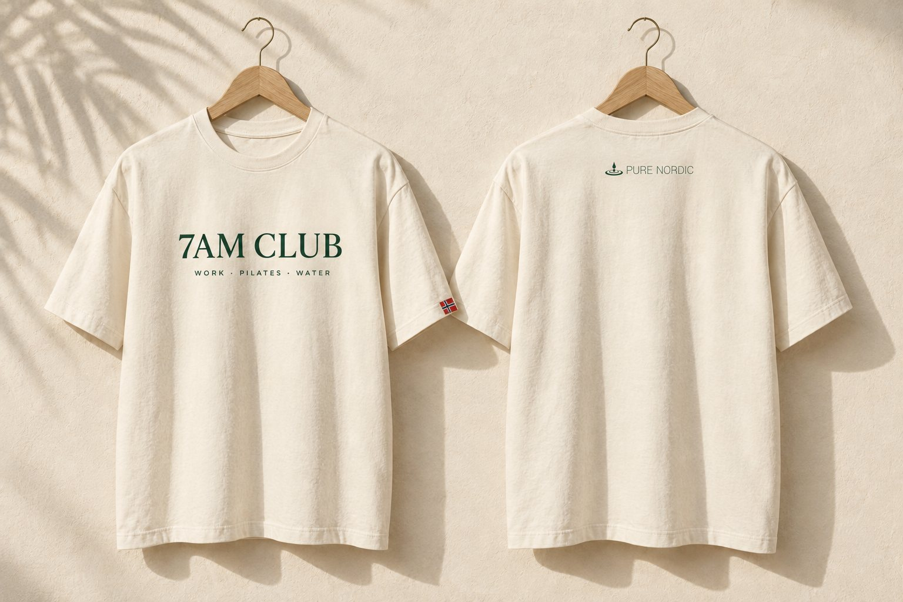
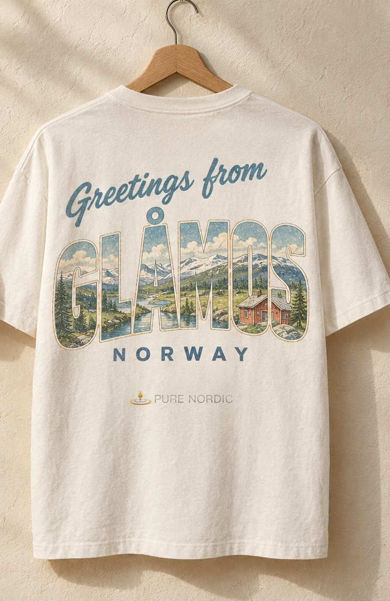
Para quien no bebe esa noche. Camiseta negra muscle fit: delante, solo la frase en blanco; detrás, el logo pequeño bajo el cuello, como una etiqueta de marca. La bandera noruega va tejida en la manga.
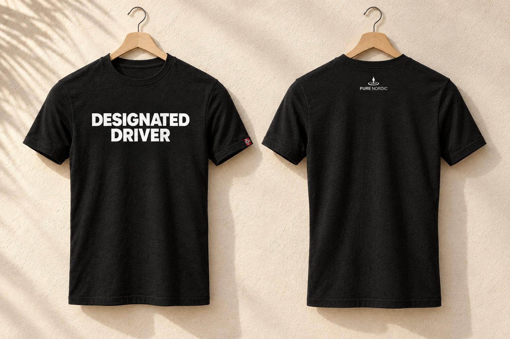
El pie izquierdo dice STILL y el derecho SPARKLING: solo se lee completo al juntar los pies. Vienen en negro (still) y blanco (sparkling), como las latas, con un grip en forma de burbujas y un cartón colgador de marca.
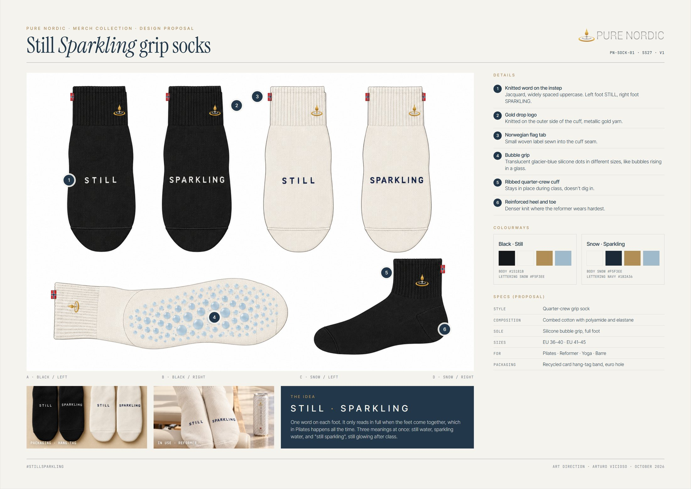
Una cita del Hávamál, el poema nórdico atribuido a Odín (Codex Regius, Islandia, c. 1270), en una valla de 8 × 3 m en la A-7. Habla del viaje, de beber menos y del origen nórdico, en tono de consejo y no de sermón.
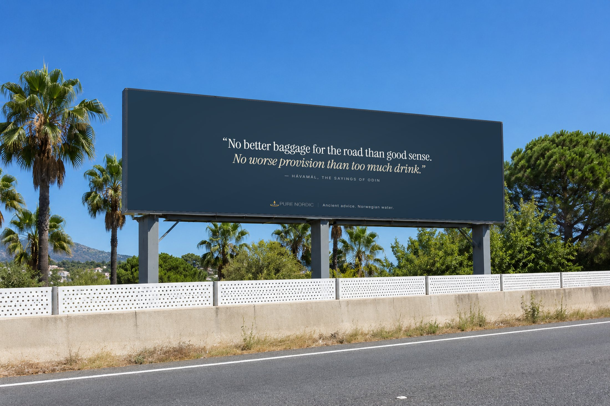
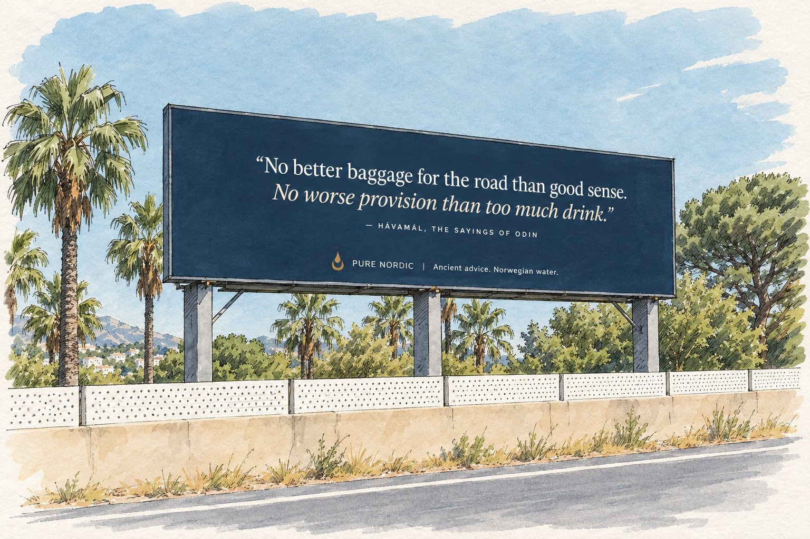
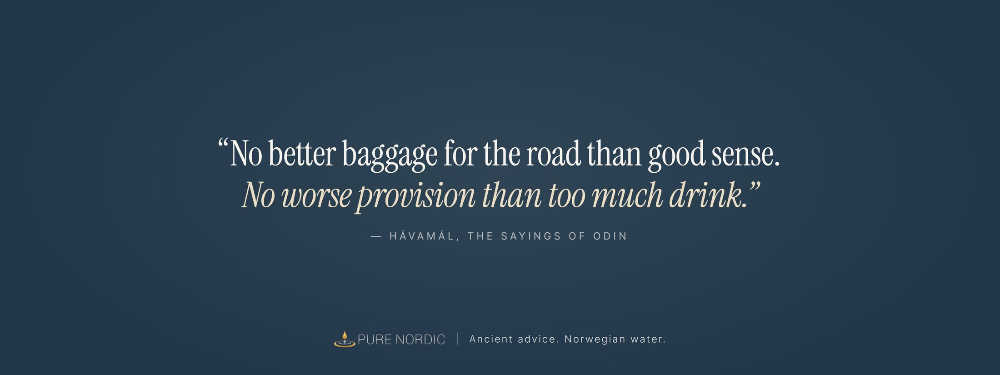
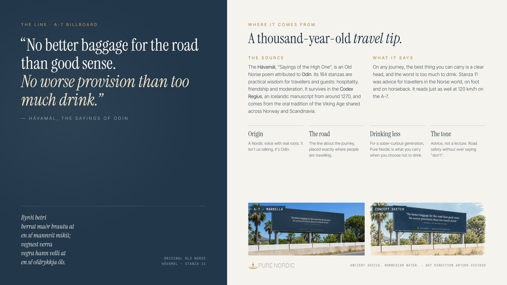
La foto a sangre y el logo pequeño abajo, sin titulares ni créditos. Las fotos son realistas, generadas con ChatGPT a partir de la lata real.
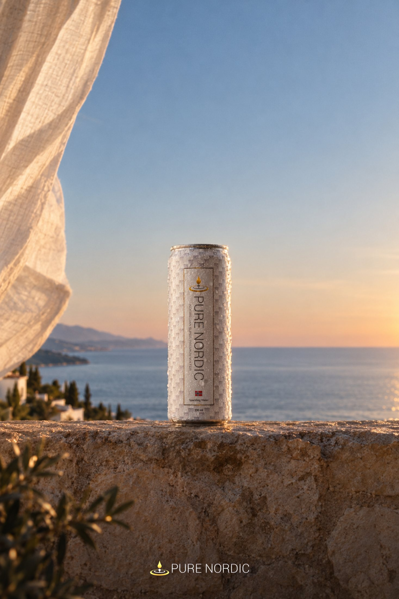
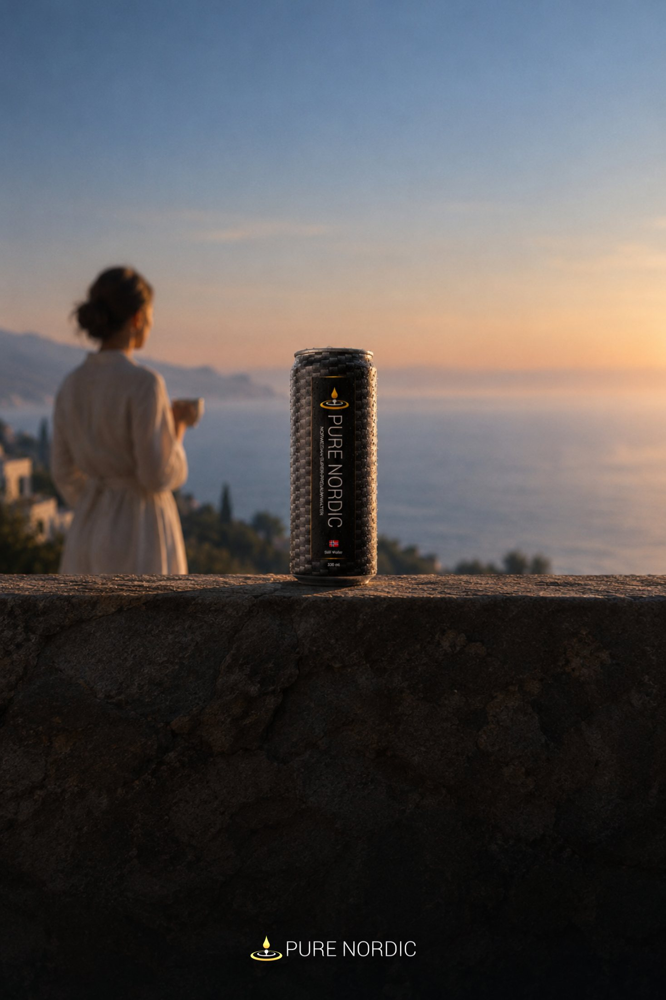
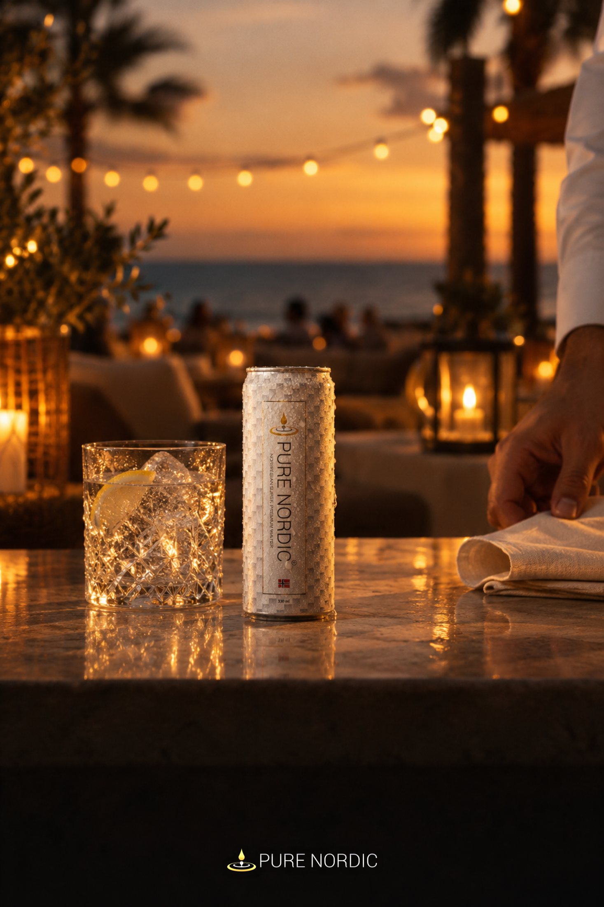
Carrusel de tres imágenes inspirado en marcas como Jacquemus (objetos gigantes en sitios reales), Sporty & Rich (el bienestar como club) y Aesop (contención). 1: una lata gigante en la playa al amanecer con una clase de pilates a su sombra. 2: el ritual de después, con calcetines, camiseta 7AM Club, lata y matcha spritz. 3: la invitación al club.
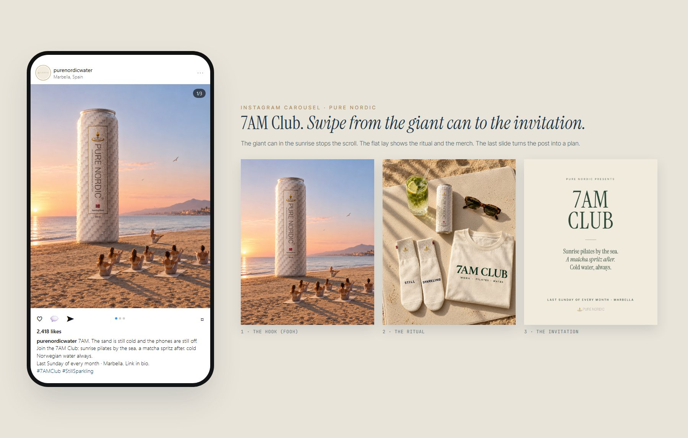
Texto del post en instagram/caption.txt.
Outro de 6,5 segundos con motion graphics y diseño de sonido propio. La nieve cae bajo una aurora boreal y se arremolina hasta formar la gota dorada. La gota cae e impacta (destello, corona de salpicaduras, ondas expansivas y un golpe de cámara), rebota hasta su sitio en el logo y "PURE NORDIC" sube letra a letra. Cierra con el tagline, un barrido de luz y burbujas de agua con gas. El sonido acompaña cada momento: aire frío, subida, el "plop" del impacto, una nota de cristal por letra y un acorde final como firma sonora de la marca.
En outro/v2/: 16:9, 9:16, 16:9 con fondo transparente (.mov ProRes 4444 con audio) y la firma sonora sola (PureNordic-sonic-logo.wav). La versión anterior, más sencilla, sigue en outro/.
| Pieza | Estado | Archivo |
|---|---|---|
| Dossier merch "Still Sparkling" (12 diapositivas) | Hecho | merch/PureNordic-StillSparkling-Dossier.pdf |
| Camiseta Matcha Spritz | Hecho | merch/images/tee-* |
| Camiseta Designated Driver | Hecho | merch/images/designated-final.png |
| Camisetas 7AM Club y Greetings from Glåmos | Hecho | merch/images/7am-club-v2.png · glamos-tee-back.png |
| Calcetines Still Sparkling | Hecho | merch/images/socks-* |
| Valla Hávamál (real, sketch, impresión, explicación) | Hecho | merch/images/billboard-* |
| Pósters simples (foto + logo): amanecer, mañana lenta, la mesa | Hecho | export/simple-morning.png · simple-calm.png · simple-table.png |
| Post de Instagram 7AM Club (carrusel de 3) | Hecho | instagram/ |
| Animación del logo v2 con sonido (6,5 s) | Hecho | outro/v2/ |
| Vaso térmico donde entra la lata | Sin empezar | Idea en merch/BRIEF.md |
| Mensaje a la marca (DM + email) | Por actualizar | OUTREACH.md |